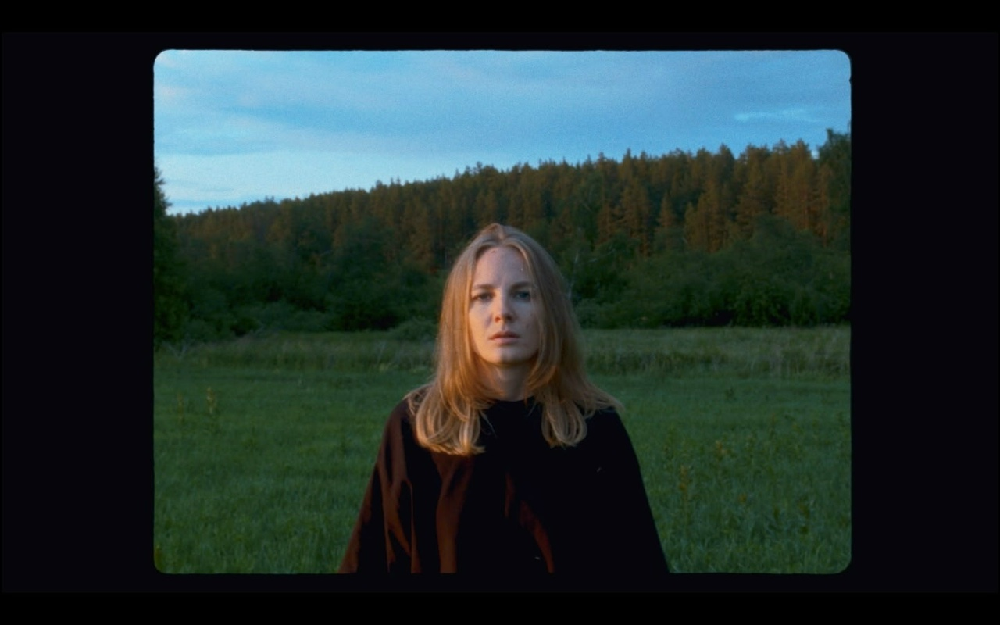
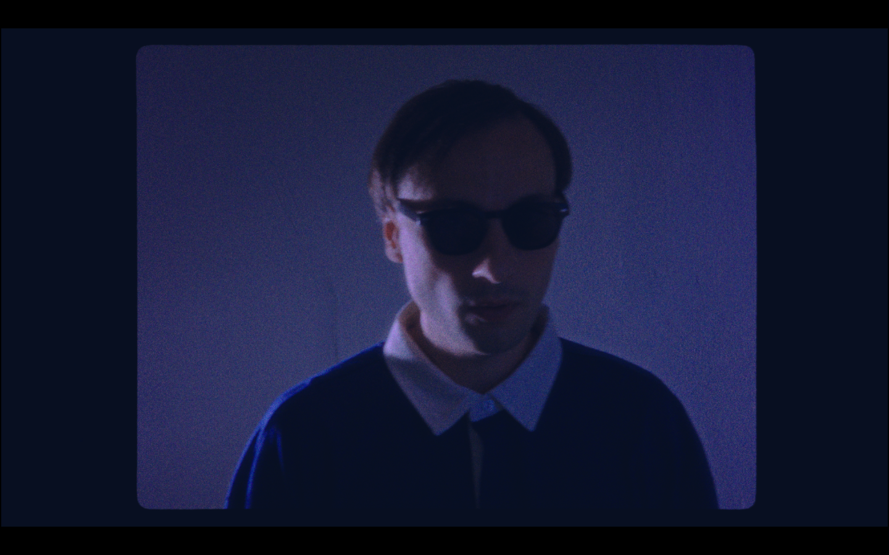

В КОМНАТЕ (2026)Смотреть тизер ↗
СТРАНИЦА РЕЖИССЕРАВ КОМНАТЕ (2026)
ВЯЧЕСЛАВВОЙТОВИЧ
НЕЗАВИСИМЫЙ
КИНЕМАТОГРАФИСТ
ИЗ ЕКАТЕРИНБУРГА

В КОМНАТЕ

КАДРЫ ИЗ ФИЛЬМА
01 / 04
ВЯЧЕСЛАВ
ВОЙТОВИЧ
Свердловская киностудия / Международный фестиваль-практикум «Кинопроба»
Очные курсы монтажа и режиссуры в рамках кинолаборатории Алексея Федорченко.
Номинант Всероссийского конкурса видео-арта «Миры Тарковского» (2026 год) за фильм «В комнате».